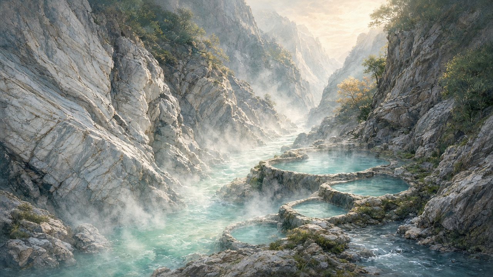

西林太魯閣族稱「霧來」（Ulay），指溫泉冒出之地。這條著名野溪溫泉在花蓮縣萬榮鄉與秀林鄉交界的恰堪溪，不是花蓮／南投交界。
| 路段 | 重點 |
|---|---|
| 車行接近 | 台 9 轉花 42 西林，經西林入山檢查所，西林林道約 1.1 公里後取右，入輔導會礦區產業道路約 2.2 公里（阿衡合計續行約 3.3 公里），至溪畔車行終點。馬克：腹地約可停 10 台，旁有水泥屋。一般車輛可到產道終點（健行筆記：碎石產道）。Model Y 路況未實地確認，不開溪床。 |
| 溪床開車 | 昔日四驅可沿溪床再進。近年遊記多寫產道終點即停車，已禁止或無法開車溯溪（馬克、阿衡、巨木七里香）。健行筆記仍寫高底盤可再過溪 2–3 次約 5 公里。現況以現場為準，部分未確認。 |
| 溯溪 | 由產道終點上溯恰堪溪。阿衡 2021：單程約 11.4 公里、約 7 小時（陰雨）；地標壁角灣 5.3k、大牙角 7.5k、大門牙 7.8k、W 曲流 9.1k、二支匯流 10.6k 取左支流、溫泉 11.4k。馬克 2019：約 12 公里、約 5 小時到洞窟，溫泉在洞窟上游左岸約 20 分；回程約 4.5 小時。巨木七里香：上行約 7 小時，單趟過溪約 15 次。健行筆記：單程 11.7 公里、往返約 9 小時；過溪約 12 次；大門牙後高繞可省約 0.5 小時。水深可及胸，需溯溪裝備與確保繩；拉繩處主要在往南二子山路徑，不是溫泉本身的垂降。溪況年年變，時數不含架繩。 |
遊記停車座標（信愛攝，非官方）：23.8434953, 121.4155112。標高約 265 公尺。
水溫約 45–55°C，pH 約 7，中性碳酸泉（維基、健行筆記、馬克）。露頭長度維基／筆記約 300 公尺，馬克約 100 公尺，未統一。近泉源較熱，馬克測末端仍偏熱、難久浸。
宜枯水期（健行筆記）。行前大雨、當日雨、溪急則不宜。冬季仍可能湍急（馬克 12 月遊記）。商業頁常見 11–4 月，非正式官方月曆。
溫泉河與溪之間的河階／台地（阿衡、巨木七里香：搭在熱水源頭旁）。洞窟是溫泉前的地標與裝備暫放處，不是唯一營點。商業團頁寫約 7–8 帳，非正式容量。
D0 以 Model Y 露營模式車宿。優先選有水源和廁所，或風景優美的溪邊。可停車不代表可在車內過夜，現場以告示為準。
| 過夜點 | 重點 |
|---|---|
| 林榮遊憩區（林榮路 221 號） Google Maps | 縱管處列停車場改善，並在無障礙公廁名單列出「林榮休憩區」。遊憩區在舊台 9、兆豐西側，鄰近河谷；精準可停車溪邊腹地未在官方頁寫明。收費：遊記稱停車免費，官方費率未確認。可否過夜：未確認。廁所夜間是否開放：未確認。投幣淋浴有來源衝突，不當作已確認設施。地面：正式遊憩區鋪面，細部分平整度未確認。收訊：未確認。未查到禁宿公告。座標取縱管處／遊記常用約 23.80557, 121.45039。距離：到產道終點 OSM 約 6.2 公里、約 15 分；龜山約 210 公里、約 3 小時 54 分；洄瀾超充約 23 公里、約 24 分。 |
| 產道終點溪畔停車場 Google Maps | 信愛攝遊記座標 23.8434953, 121.4155112（非官方），標高約 265 公尺，屬風景溪邊停車。無廁所紀錄。位於管制區，入山證須涵蓋過夜。可否過夜：未確認。收費：未確認。地面：溪畔空地，平整度未確認。收訊：未確認。距離：登山口旁；龜山 OSM 約 216 公里、約 4 小時 08 分；洄瀾超充約 29 公里、約 39 分。不開溪床續進。 |
冬季夜間氣溫：維基百科引用中央氣象署 1991–2020 年花蓮市十二月平均最低 17.2°C。林榮為低海拔縱谷，產道終點約 265 公尺，可能略低，未另查鳳林測站。
露營模式耗電：查到最接近的台灣冬季實測，是 2024-12 Model 3 在桃園馬莎度（約 600 公尺、室外 12–14°C、暖氣 25–28°C）20 小時耗 36%，約 1.8%/時，一晚 8–10 小時約 15–18%。林榮夜間通常比該實測暖，15–18% 當作偏保守上限。Model Y、花蓮縱谷同條件未確認。
洄瀾超充：若 D0 在林榮，建議充到約 70–80%，含一晚約 15–18% 與次日約 6 公里到產道終點，並為回程約 29 公里到超充留電。若在產道終點過夜，建議約 80–90%。山路與暖氣耗電未實測，出發前以車機預估為準。
備案：若改住旅館或民宿，可選鳳林、林榮或花蓮市區；查詢日未比較房型與價格。
來源：縱管處無障礙公廁名單、林榮遊憩區改善新聞、維基：花蓮市氣溫（氣象署 1991–2020）、2024-12 Model 3 耗電實測、信愛攝停車座標。距離為 OSRM，2026-11-17，自由流。
自組。標準為 D0 車宿、D1 重裝上溯並在溫泉野營、D2 回程。筆記往返約 9 小時，單日來回偏緊，視溪況。查詢日 2026-11-17（週二，Asia/Taipei）。
| 路段 | 約略里程 | 系統時間 |
|---|---|---|
| 龜山到林榮遊憩區 | 210 公里 | 約 3 小時 54 分 |
| 龜山到產道終點（遊記座標） | 216 公里 | 約 4 小時 08 分 |
| 龜山到花蓮－洄瀾超充一帶 | 187 公里 | 約 3 小時 30 分 |
| 洄瀾超充到林榮 | 23 公里 | 約 24 分 |
| 洄瀾超充到產道終點 | 29 公里 | 約 39 分 |
| 林榮到產道終點 | 6.2 公里 | 約 15 分 |
最後 Tesla 超充用花蓮－洄瀾（吉安南濱路一段 505 號；teslano1：V3、250 kW × 6、24 小時；座標依 teslano1／南濱路一段道路定位，門牌精準點未官方確認）。林榮新光站兆豐路 800 號有星舟快充（teslano1：最高 180 kW、含 CCS2、24 小時），不是 Tesla 超充，Model Y 可用。鳳林沒有 Tesla 超充。建議在洄瀾充到上文比例後再開往過夜點。
OSRM／OpenStreetMap，2026-11-17。自由流，不含山路實速。
探險威狼 Wilang-Explorer（2026-03-05）· YouTube
花蓮萬榮二子山溫泉單攻，描述當年河道與夢幻藍泉池。
守城小隊（2026-11-10）· YouTube
查詢日前可見的較新路況與溫泉河畫面。
OutDoorBoyZ（2025-03-17）· YouTube
說明位於恰堪溪上游、大理石峽谷與約 11.5 公里溯溪。
信愛攝 ShinVlog（2024-11-13）· YouTube
恰堪溪、二子山單攻紀錄，描述含遊記停車座標。
禧遊記×Adventure（2026-01-23）· YouTube
藍色祕境路程景分享，片長較短。
璐去旅行（2025-04-26）· YouTube
描述約 12 公里、涉溪約 15 次的兩天一夜。
皆為公開 YouTube 官方嵌入，並經標題或說明確認為花蓮恰堪溪／二子山溫泉，不是北二子山或知本、紅香。查詢日未找到可確認的 Instagram 公開貼文。不下載、不轉存別人的圖。
車程以 OpenStreetMap / OSRM 於 2026-11-17 估算。查不到的已標未確認。